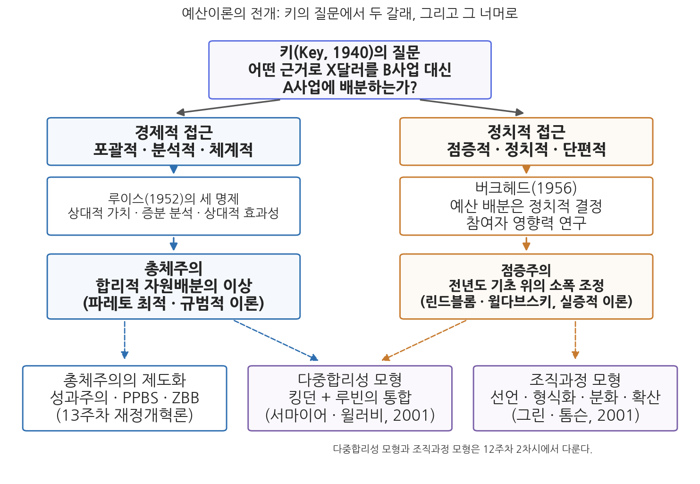
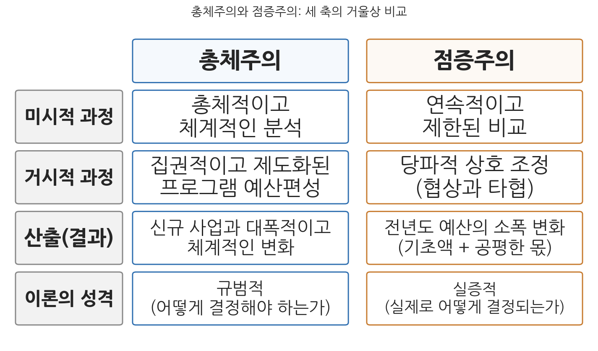

12주차 1차시. 예산이론 (1): 총체주의와 점증주의
최종 수정: 2026-08-13 · 이 교재는 학기 중에도 계속 업데이트됩니다
어떠한 근거로 X달러를 사업 B 대신 사업 A에 배분하도록 결정하는가? (V. O. 키, 「예산이론의 결여」, 1940)
이 장에서 배우는 것
숫자 몇 개에서 시작하자. 국회가 확정한 본예산 기준으로 한국의 총지출은 2022년 607.7조 원, 2023년 638.7조 원, 2024년 656.6조 원, 2025년 673.3조 원이었다. 전년 대비 증가율로 바꾸면 5.1%, 2.8%, 2.5%다. 정권이 바뀌고 경제 상황이 요동쳐도, 나라 살림의 총량은 해마다 전년도의 어깨 위에서 몇 퍼센트씩만 움직인다. 그런데 같은 기간의 다른 장면도 있다. 2024년 본예산에서 연구개발(R&D) 분야 예산은 26.5조 원으로 전년(31.1조 원)보다 약 15% 줄었다. 총량은 완만하게 움직이는데 개별 분야는 급격하게 출렁인다. 이 두 장면을 하나의 언어로 설명할 수 있을까.
11주차에서 우리는 예산과정 참여자들의 행태를 보았다. 부처는 소비자로서 더 요구하고, 중앙예산기관은 절약자이자 수문장으로서 깎고, 국회는 그 사이에서 정치적 계산을 한다. 이번 주는 그 관찰들을 이론의 수준으로 끌어올린다. 출발점은 1940년 키(V. O. Key)가 던진 질문이다. 어떤 근거로 한정된 돈을 이 사업이 아니라 저 사업에 배분하는가. 이 질문에 대한 두 개의 고전적 대답이 이 장의 주인공이다. 하나는 분석과 계산으로 최선의 배분을 찾을 수 있다는 총체주의이고, 다른 하나는 예산은 전년도 예산의 어깨 위에서 조금씩 움직일 뿐이라는 점증주의다. 구체적으로 다음을 배운다.
- 키의 질문이 왜 예산이론의 출발점인지, 그리고 예산이론이 경제적 접근과 정치적 접근의 두 갈래로 전개된 과정
- 총체주의의 논리: 합리적 결정 절차(과정 측면)와 파레토 최적의 자원배분(결과 측면), 그리고 세 가지 전제의 한계
- 점증주의의 논리: 제한된 비교와 상호 조정(과정 측면), 그리고 점증성 검증 연구가 보여 준 산출의 세 층위
- 두 이론의 체계적 비교와, 한국 재정제도 안에 들어와 있는 총체주의·점증주의의 흔적
이 장은 하나의 질문을 따라 전개된다. "정부는 어떤 근거로 한정된 예산을 배분하는가, 그리고 실제로는 어떻게 배분하고 있는가?"
1.1 키의 질문에서 출발해 예산이론이 두 갈래로 전개된 지도를 그린다 → 1.2 총체주의의 과정·결과 논리와 한계, 한국 제도 속의 총체주의를 본다 → 1.3 점증주의의 과정·산출 논리와 점증성 검증 연구를 뜯어본다 → 1.4 두 이론을 비교하고, 이분법을 넘어서려는 시도(12주차 2차시)를 예고한다.
1.1 키의 질문과 예산이론의 전개
1940년, 예산이론의 출발점
예산이론의 역사는 하나의 질문에서 시작되었다고 말해도 지나치지 않다. 미국의 정치학자 키(V. O. Key)는 1940년 「예산이론의 결여(The Lack of a Budgetary Theory)」라는 논문에서, 예산 연구가 절차와 기법에 관한 논의로 가득한데 정작 근본 질문에는 답하지 못하고 있다고 지적했다. 그 근본 질문이 이 장 첫머리에 인용한 문장이다. 어떠한 근거로 X달러를 사업 B 대신 사업 A에 배분하기로 결정하는가. 예산의 핵심이 배분(allocation)이라면, 예산이론의 핵심은 "왜 그러한 배분이 이루어지는가"를 설명하는 것이어야 한다는 문제 제기였다.
키의 지적 이후에도 사정은 크게 달라지지 않았다. 대부분의 예산 연구는 이론적이기보다 실무 지향적이었고, 질문보다는 대답에 가까웠다. 루빈(Irene Rubin)은 1988년에도 예산 연구자들이 자신의 전공 학문의 전제와 이론 안에서만 예산에 접근하는 경향이 있다고 꼬집으면서, 다양한 이론을 예산에 적용해 보는 학습의 중요성을 강조했다(Rubin, 1988). 경제학자는 효율의 언어로, 정치학자는 권력의 언어로, 행정학자는 절차의 언어로 각자 예산을 말한다는 것이다. 이 장과 다음 차시에서 여러 이론을 차례로 살펴보는 이유가 여기에 있다.
두 갈래의 전개: 경제적 접근과 정치적 접근
키의 질문에 대한 대답은 크게 두 갈래로 전개되었다. 첫째 갈래는 예산 배분의 경제적 측면을 강조하는 포괄적·분석적·체계적 접근이다. 루이스(Verne Lewis)는 1952년 「예산이론을 향하여(Toward a Theory of Budgeting)」에서 경제학의 한계효용 개념을 예산결정에 적용하여, 상대적 가치(relative value), 증분 분석(incremental analysis), 상대적 효과성(relative effectiveness)이라는 세 가지 명제를 제시했다(Lewis, 1952). 예산의 배분은 절대적 기준이 아니라 대안들 사이의 상대적 가치 비교에 입각해야 하고, 추가되는 돈이 낳는 추가적 효과를 따져야 하며, 같은 목표를 놓고 사업들의 상대적 효과를 비교해야 한다는 것이다. 이 계열의 사고는 이후 성과주의 예산제도, 계획예산제도(PPBS), 영기준 예산제도(ZBB) 같은 예산개혁 운동에 이론적 기반을 제공했다. 13주차 1차시에서 보겠지만, 20세기 예산개혁의 역사는 상당 부분 이 갈래의 제도화 시도였다.
둘째 갈래는 예산 배분의 정치적 측면을 강조하는 점증적·정치적·단편적 접근이다. 버크헤드(Jesse Burkhead)는 1956년 『정부예산론(Government Budgeting)』에서 예산의 규모와 세입·세출 배분에 관한 결정이 본질적으로 정치적 결정임을 강조했다(Burkhead, 1956). 이후 예산결정에 참여하는 기관과 집단들의 영향력 관계에 대한 연구가 이어졌고, 이 흐름은 윌다브스키(Aaron Wildavsky)의 점증주의로 집대성되었다. 그림 12-1이 이 전개를 한눈에 보여 준다.

그림 12-1을 읽는 법은 이렇다. 맨 위의 키의 질문에서 두 개의 화살표가 갈라져 나온다. 왼쪽이 경제적 접근이고 그 끝이 총체주의, 오른쪽이 정치적 접근이고 그 끝이 점증주의다. 왼쪽 아래의 상자는 총체주의가 예산개혁 제도로 구현된 경로(13주차)를, 가운데와 오른쪽 아래의 상자는 두 이론의 이분법을 넘어서려는 후속 이론들(12주차 2차시)을 가리킨다. 이 그림에서 알 수 있는 것은 두 가지다. 첫째, 이 장에서 배우는 두 이론은 같은 질문에 대한 서로 다른 갈래의 대답이다. 둘째, 예산이론의 역사는 두 이론에서 끝나지 않고 통합과 확장으로 이어진다.
판단의 축: 과정과 산출
두 이론을 비교하기 전에 분석의 축을 하나 세워 두자. 예산결정 체제를 판단하는 기준은 과정(process)과 산출(output)로 나눌 수 있다. 과정은 예산이 어떤 절차와 방식으로 결정되는가이고, 산출은 그 결과 예산이 어떤 모습으로 나타나는가다. 이 구분은 예산결정 과정과 예산 산출 사이에 인과관계가 있다는 생각을 암묵적으로 깔고 있다. 합리적 과정은 체계적 산출을, 점증적 과정은 점증적 산출을 낳으리라는 기대다. 하지만 예산 산출이 과정에 의해서만 결정되는 것은 아니라는 점도 기억해야 한다. 11주차 2차시에서 본 예산결정요인론이 보여 주었듯, 예산 결과는 경제·사회적 환경 요인과 참여자들의 개별 전략에 의해서도 영향을 받는다. 이 장에서 총체주의와 점증주의를 살필 때에도 과정 측면과 산출(결과) 측면을 나누어 보는 방식을 일관되게 쓸 것이다.
1.2 총체주의: 합리적 자원배분의 이상
합리적 선택모형을 예산에 적용하면
총체주의적 예산결정은 합리적 선택모형에 입각한 예산상의 의사결정을 말한다. 경제학의 한계효용, 기회비용, 최적화 개념이 동원되며, 쉬크(Allen Schick)가 말한 체제예산운영(system budgeting)도 총체주의를 반영한 개념이다(Schick, 1969). 총체주의는 두 측면으로 나누어 볼 수 있다. 과정 측면에서는 합리적·분석적 의사결정 절차를 따르는 것이고, 결과 측면에서는 사회후생을 극대화하는 배분에 도달하는 것이다. 여기서 주의할 점이 있다. 과정이 최선의 행동을 선택한다고 해서 결과까지 반드시 최선이 된다는 보장은 없다. 총체주의는 예산결정 과정을 합리화하여 예산상의 편익을 극대화하려는 결정 방식이므로, "실제로 이렇게 결정된다"는 기술이라기보다 "이렇게 결정해야 한다"는 규범적 성격이 강한 이론이다.
총체주의(synopticism, 합리주의)는 합리적 선택모형에 입각한 예산결정 방식으로, 목표 달성을 위한 모든 대안을 포괄적으로 탐색·비교하여 예산상의 편익을 극대화하는 배분을 선택하려는 접근이다. 과정 측면에서는 합리적·분석적 의사결정 절차를, 결과 측면에서는 사회후생의 극대화(파레토 최적의 배분)를 지향한다. 현실의 기술이라기보다 규범적 이론의 성격이 강하다.
과정 측면: 여섯 단계의 합리적 절차
과정 측면에서 총체주의적 예산결정은 세 가지를 전제한다. 첫째, 예산결정자는 사회의 가치 또는 우선순위를 알고 있다. 둘째, 문제 해결과 관련된 완전한 지식과 정보를 가지고 있다. 셋째, 합리적으로 행동한다. 이 전제 위에서 예산결정은 다음 절차를 거친다. 문제를 확인하고 목표를 정의한다. 목표 달성이 가능한 모든 대안을 탐색한다. 각 대안이 초래할 결과를 예측한다. 대안들의 결과를 평가하고 비교한다. 최선의 대안을 선택한다. 그리고 선택된 정책과 사업에 예산을 배분한다. 요컨대 정책분석 교과서에 나오는 합리모형의 결정 절차를 예산이라는 영역에 그대로 적용한 것이다.
결과 측면: 파레토 최적의 배분
결과 측면에서 총체주의가 지향하는 것은 사회후생을 극대화하는 예산 배분, 곧 파레토 최적(Pareto optimum)을 실현한 배분 상태다. 1주차 2차시에서 본 거시적 배분과 미시적 배분의 구분을 떠올려 보자. 거시적 배분은 민간부문과 공공부문 사이에 자원을 나누는 문제, 곧 예산의 적정 총규모를 찾는 문제다. 총체주의는 사회후생함수를 알고 있다는 전제 아래, 민간과 공공의 한계편익이 균형을 이루는 지점에서 적정 예산 규모가 도출된다고 본다. 미시적 배분은 주어진 예산총액 안에서 기능 또는 사업들 사이에 자금을 나누는 문제다. 여기에는 소비자가 주어진 소득으로 효용이 극대화되도록 재화의 소비량을 결정하는 원리, 곧 한계효용 균등의 원리가 그대로 작동한다. 마지막 1원이 어느 사업에 쓰이든 같은 크기의 편익을 낳도록 배분하는 것이 최적이라는 논리다.
총체주의의 과정과 결과는 논리적으로 연결되어 있지만 자동으로 이어지지는 않는다. 첫째, 절차가 합리적이어도 투입되는 정보가 불완전하면 결론은 최적에서 벗어난다. 대안 탐색에서 빠진 대안, 결과 예측의 오차가 그대로 배분의 오차가 된다. 둘째, 공공부문에는 시장가격 같은 선호의 신호가 없다. 국방과 복지 중 무엇이 더 큰 효용을 주는지는 소비자의 구매 행위처럼 드러나지 않기 때문에, 한계효용 균등의 원리를 적용할 공통의 자(척도) 자체가 마련되기 어렵다. 셋째, 예산결정에는 여러 결정자가 참여한다. 개인의 합리성이 집단의 결정으로 합쳐지는 과정에서 협상과 타협이 개입하며, 그 결과는 어느 개인의 최적 계산과도 다를 수 있다. 과정의 합리화가 곧 결과의 최적화라는 등식이 성립하지 않는다는 점은, 뒤에서 볼 점증주의가 파고드는 지점이기도 하다.
총체주의의 한계와 의의
총체주의의 한계는 전제의 비현실성에서 나온다. 첫째, 총체주의는 완전한 지식과 정보를 가정하지만, 실제 예산결정에는 인간의 인지 능력의 한계, 결정 비용의 과다, 상황의 불확실성이라는 제약이 따른다. 모든 대안을 탐색하고 결과를 정확히 예측하는 일은 현실적으로 불가능하다. 둘째, 총체주의는 해결할 문제와 달성할 목표가 명백히 주어져 있다고 가정하지만, 실제의 문제와 목표는 명확하지 않거나 서로 모순되고 상충한다. 셋째, 총체주의는 사회적 가치의 우선순위와 사회후생함수가 알려져 있다고 가정하지만, 공공재에 대한 선호는 잘 드러나지 않기 때문에 사회후생함수를 찾는 것은 거의 불가능하다. 그럼에도 총체주의는 불확실한 상황에서 최선의 대안을 선택하기 위해 필요한 논리와 기법을 제공한다는 점에서 의미를 가진다. 완전한 합리성이 불가능하다는 것이 분석을 포기할 이유는 되지 않기 때문이다.
한국 제도 속의 총체주의
총체주의는 이상형이지만, 그 지향은 한국의 재정제도 곳곳에 제도화되어 있다. 대표적인 것이 국가재정운용계획이다.
"① 정부는 재정운용의 효율화와 건전화를 위하여 매년 해당 회계연도부터 5회계연도 이상의 기간에 대한 재정운용계획(이하 "국가재정운용계획"이라 한다)을 수립하여 회계연도 개시 120일 전까지 국회에 제출하여야 한다."
무슨 뜻인가. 예산을 한 해 단위의 흥정에 맡기지 않고, 5년 이상의 시계에서 재정운용의 목표와 방향을 먼저 세운 뒤 연도별 예산을 그 틀 안에서 편성하라는 요구다. 중기적 시계, 총량의 사전 설정, 분야별 재원배분의 체계적 검토라는 발상은 모두 총체주의의 언어다. 10주차 1차시에서 본 총액배분 자율편성제도(각 부처에 지출한도를 먼저 배분하고 그 안에서 자율 편성하게 하는 방식)도 거시적 배분을 먼저 결정하고 미시적 배분을 그에 종속시킨다는 점에서 같은 계보에 있다. 개별 사업 수준에서는 14주차에서 다룰 예비타당성조사(예타)가 총체주의적 분석의 제도화다. 대규모 사업에 돈을 넣기 전에 비용과 편익을 계산해 대안을 비교하라는 것은 총체주의 절차의 축소판이기 때문이다. 요컨대 총체주의는 현실의 기술로는 실패했지만, 규범과 제도의 설계도로는 지금도 살아 있다.
1.3 점증주의: 과정과 산출
그럭저럭 헤쳐나가는 예산결정
점증주의는 총체주의와 대비되는 결정모형으로, 상황의 불확실성과 인간 능력의 부족을 전제한다. 지적 토대는 듀이(John Dewey)와 바너드(Chester Barnard), 그리고 제한된 합리성을 정식화한 사이먼(Herbert Simon)이 마련했고, 린드블롬(Charles Lindblom)과 윌다브스키에 의해 예산이론으로 발전했으며, 달(Robert Dahl) 등의 다원주의 정치이론이 이를 뒷받침했다. 핵심 명제는 단순하다. 예산결정은 전년도 예산을 기초로 좁은 범위 안에서 점증적으로 이루어진다. 점증주의적 결정 과정은 점증적 산출과 밀접하게 연결되어, 혁신적이고 체계적인 예산 산출 대신 소폭의 변화를 낳는다. 총체주의가 규범적 이론이라면 점증주의는 실증적 성격이 강한 이론이다. 현실에서 이루어지는 예산결정의 실상을 가장 정확하게 기술한다는 것이 점증주의의 힘이다.
점증주의(incrementalism)는 예산결정이 전년도 예산을 기초로 좁은 범위의 증감 조정을 통해 이루어진다고 보는 이론이다. 과정 측면에서는 제한된 정보와 능력을 가진 결정자들이 연속적이고 제한된 비교와 상호 조정으로 결정에 도달한다고 보며(과정의 점증주의), 산출 측면에서는 예산의 변화가 소폭에 그친다는 점증성을 주장한다(산출의 점증주의). 린드블롬의 정책결정론과 윌다브스키의 예산과정 연구로 대표된다.
과정 측면 ①: 미시적 과정, 연속적이고 제한된 비교
미시적 과정, 곧 개별 결정자의 수준에서 점증주의는 연속적이고 제한된 비교분석(successive limited comparison)으로 나타난다. 린드블롬이 「그럭저럭 헤쳐나가는 과학(The Science of "Muddling Through")」에서 정식화한 논리다(Lindblom, 1959). 의사결정자는 제한된 정보와 인식 능력을 가지고 불확실한 세계에서 문제를 과감히 단순화한다. 과거에 성공한 정책을 한계적으로 조정하고, 결정에 투입할 시간과 대안 탐색·결과 예측 능력이 부족하므로 제한된 수의 대안만 비교하여 결정한다. 이 제한된 비교분석이 한 번으로 끝나지 않고 연속적으로 진행되면서, 결정자는 그럭저럭 헤쳐나간다(muddling through).
윌다브스키는 예산결정자가 복잡성을 다루기 위해 사용하는 계산 보조수단(aids to calculation)의 행태를 정리했다. 자료는 너무 많거나 너무 적고 사회 체제는 계속 변하기 때문에, 결정자는 복잡성을 단순화하는 보조수단에 의존한다는 것이다. 구체적으로 네 가지다. 첫째, 경험적(experimental) 행태로, 축적된 경험으로 해결하거나 어려움을 피해 간다. 둘째, 단순화(simplification)로, 문제가 복잡할 때에는 단순한 항목으로 대체해 판단한다. 셋째, 만족화(satisficing) 기준으로, 극대화가 아니라 "이만하면 됐다"는 기준을 사용한다. 넷째, 점증적(incremental) 행태로, 결정의 대부분을 과거 결정의 산물로 처리한다(Wildavsky, 1964; 1984). 전년도 예산이라는 기초가 있기에 결정자는 전체를 다시 계산할 필요 없이 변화분만 심사하면 된다. 점증주의는 이 계산 부담의 절약을 예산결정의 합리적 적응으로 읽는다.
과정 측면 ②: 거시적 과정, 당파적 상호 조정
거시적 과정, 곧 결정 체제의 수준에서 점증주의는 상호 조정(mutual adjustment)으로 나타난다. 예산결정은 이미 정해진 결정규칙과 절차에 따라 이루어지고, 그 과정에는 수많은 분절점(준자율적 의사결정점)이 존재한다. 부처의 요구, 중앙예산기관의 사정, 국회의 심의가 각각 반쯤 독립적인 결정점이 되어 조각조각 결정이 이루어진다는 점에서 분할적 점증주의(disjointed incrementalism)라고도 불린다. 중요한 것은 이 분절이 혼란으로 끝나지 않는다는 점이다. 예산과정에 참여하는 당파적 의사결정자들은 각자의 이해를 추구하면서도 협상과 타협을 통해 합의에 도달한다. 예산은 관료, 정치인, 유권자 등 수많은 주체 사이의 협상 과정의 결과이며, 바로 여기에서 예산의 정치적 성격이 드러난다. 11주차에서 본 소비자·절약자·수문장의 정형화된 행태는 이 상호 조정이 작동하는 미시적 기초라고 할 수 있다. 각자가 예측 가능한 역할을 연기하기 때문에, 전체 체제는 큰 갈등 없이 매년 예산을 만들어 낸다.
한국의 헌법은 이 상호 조정에 명확한 역할 구조를 부여하고 있다.
"국회는 정부의 동의없이 정부가 제출한 지출예산 각항의 금액을 증가하거나 새 비목을 설치할 수 없다."
무슨 뜻인가. 예산의 제안권은 정부가 독점하고, 국회는 정부안을 깎을 수는 있어도 정부 동의 없이는 늘리거나 새 항목을 만들 수 없다는 뜻이다. 이 조문은 행정부가 제안하고 입법부가 삭감 중심으로 심의하는 안정적 역할 분담을 헌법 수준에서 고정한다. 점증주의의 언어로 옮기면, 참여자들의 행태가 예측 가능해지는 안정적 결정규칙이 제도로 보장되어 있는 셈이다. 부처는 깎일 것을 알고 요구하고, 국회는 정부안이라는 기초 위에서 증감을 다툰다. 한국 예산과정의 점증성은 참여자들의 심리만이 아니라 이런 규칙 구조의 산물이기도 하다.
산출 측면: 점증성은 어디까지 사실인가
점증주의의 산출 측면은 예산의 소폭 변화, 곧 점증성으로 표현된다. 그런데 여기에는 두 가지 까다로운 문제가 따라붙는다. 얼마만큼의 변화를 소폭으로 볼 것인가(점증성의 정도), 그리고 무엇을 대상으로 소폭 여부를 판단할 것인가(점증성의 대상)이다. 점증성의 정도는 연구마다 10% 이내, 25% 미만, 30% 이내 등으로 서로 다르게 설정되어 왔고, 통일된 기준은 없다. 더 흥미로운 것은 점증성의 대상이다. 무엇을 분석 단위로 삼느냐에 따라 점증성 검증의 결론이 갈리기 때문이다.
첫째, 총예산 규모는 점증적이다. 금년도 예산은 작년 예산의 함수라는 것이 점증주의의 기본 관찰이다. 윌다브스키의 개념으로 예산 산출은 기초액(base)과 공평한 몫(fair share)의 합이다. 기초액은 부처의 현행 예산 수준이 큰 제약 없이 다음 연도에도 허용되리라는 결정자들의 기대이고, 공평한 몫은 기초액에 더해 총예산의 증감분 가운데 일정 비율을 자기 부처도 가져가리라는 기대까지 포함한 개념이다.
둘째, 기관 간 관계는 선형적이고 안정적이어서 점증적 결과를 낳는다. 데이비스, 뎀스터, 윌다브스키(Davis, Dempster & Wildavsky, 1966)는 미국 연방예산 자료에서 예산결정 과정에 선형성과 안정성이 존재함을 경험적으로 입증했다. 부처의 금년도 요구액은 전년도 의회 승인액의 함수이고, 금년도 승인액은 금년도 요구액의 함수라는 단순한 선형 관계가 오랜 기간 안정적으로 유지된다는 것이다. 여기서 안정적인 예산결정 과정이란 개별 배분 결정들이 충분히 독립적으로 이루어져 상충관계가 표면화되지 않고 갈등이 최소화되는 과정을 뜻한다(Gist, 1982). 예산 변화의 점증성을 의사결정 체제의 동태적 특성으로 설명한 셈이다.
셋째, 그러나 사업별 예산은 비점증적으로 변화한다. 분석 단위를 부처가 아니라 개별 사업(program)으로 내리면 예산은 큰 폭으로 출렁이는 비점증적 행태를 보인다는 연구들이 이어졌다(Kanter, 1972; Natchez & Bupp, 1973 등). 데이비스 등의 연구가 부처, 관리예산처(OMB), 의회라는 서로 다른 계층 간의 수직적 관계를 분석해 점증성과 안정성을 발견했다면, 이 연구들은 동일 계층 안에서 사업들이 벌이는 수평적 경쟁관계를 분석해 비점증성과 불안정성을 보여 주었다. 총량의 안정 밑에서 사업들 사이에는 치열한 우선순위 다툼이 벌어진다는 것이다.
국회가 확정한 본예산 기준 총지출은 2022년 607.7조 원, 2023년 638.7조 원(전년 대비 +5.1%), 2024년 656.6조 원(+2.8%), 2025년 673.3조 원(+2.5%)이었다. 4년 동안 어느 해도 전년 대비 증가율이 10%를 넘지 않았고, 감소한 해도 없었다. 반면 분야·사업 수준에서는 다른 그림이 나타난다. 2024년 본예산의 연구개발(R&D) 분야 예산은 26.5조 원으로 전년(31.1조 원)보다 약 15% 줄었다가, 2025년 본예산에서 29.6조 원으로 다시 늘었다. 총량은 좁은 구간에서 움직이는 동안 특정 분야는 두 자릿수 증감을 겪은 것이다. (출처: 각 연도 본예산, 국회 의결 기준)
이 사례가 보여 주는 것은 점증성 검증 연구의 결론이 한국에서도 재현된다는 점이다. 총예산 규모의 변화율만 보면 한국의 예산은 교과서적인 점증주의로 보인다. 그러나 분석 단위를 분야와 사업으로 내리면 비점증적 변동이 어렵지 않게 발견된다. 점증성의 대상을 어디에 두느냐에 따라 같은 나라의 같은 예산이 점증적으로도, 비점증적으로도 읽히는 것이다. 점증주의가 맞느냐 틀리느냐를 묻기 전에, 어느 수준의 점증주의를 말하는지부터 물어야 하는 이유다.
점증주의의 한계
점증주의의 한계는 네 가지로 정리할 수 있다. 첫째, 어느 정도를 점증적이라고 볼 것인지, 무엇을 대상으로 점증성을 판단할 것인지가 모호하다. 방금 본 것처럼 기준과 단위에 따라 결론이 달라지므로, 이론의 핵심 개념이 불안정하다는 비판을 피하기 어렵다. 둘째, 비점증적 결정을 설명하지 못한다. 대규모 우주개발 사업처럼 전년도 기초 없이 출발하는 결정이나 급격한 삭감은 점증주의의 틀 밖에 있다. 셋째, 정치적 실현 가능성과 결정 체제의 안정성을 중시함으로써 현존 상태를 옹호하는 보수주의적 성격을 지닌다. 기존 배분에 문제가 있어도 그것이 기초액으로 보호되는 현실을 정당화할 위험이 있다. 넷째, 예산개혁의 차원에서 점증주의는 뚜렷한 방향을 제시하지 못한다. 실제로 지금까지의 예산개혁 노력은 점증주의가 아니라 총체주의의 제도화에 초점이 모아져 왔다. 있는 그대로를 기술하는 이론은 무엇을 바꿔야 하는지에 대해서는 침묵하기 때문이다.
1.4 총체주의와 점증주의의 비교
세 축의 비교
두 이론을 미시적 과정, 거시적 과정, 산출(결과)의 세 축으로 비교하면 표 12-1과 같다.
표 12-1. 총체주의와 점증주의의 비교
| 구분 | 총체주의 | 점증주의 |
|---|---|---|
| 미시적 과정 | 총체적이고 체계적인 분석 | 연속적이고 제한된 비교 |
| 거시적 과정 | 집권적이고 제도화된 프로그램 예산편성 | 당파적 상호 조정 |
| 산출(결과) | 신규 사업과 대폭적·체계적인 변화 | 전년도 예산의 소폭 변화 |
| 이론의 성격 | 규범적(어떻게 결정해야 하는가) | 실증적(실제로 어떻게 결정되는가) |

그림 12-2를 읽는 법은 이렇다. 왼쪽 열이 비교의 축(미시적 과정, 거시적 과정, 산출, 성격)이고, 가운데와 오른쪽 열이 각각 총체주의와 점증주의의 대답이다. 이 그림에서 알 수 있는 것은 두 이론이 같은 질문들에 대해 축마다 정반대의 대답을 내놓는 거울상 구조라는 점이다. 분석이냐 비교냐, 집권적 편성이냐 당파적 조정이냐, 대폭 변화냐 소폭 변화냐. 키의 질문에 총체주의는 "한계편익의 비교 분석에 근거해 배분해야 한다"고 답하고, 점증주의는 "전년도 배분에 근거해, 참여자들의 상호 조정을 거쳐 배분되고 있다"고 답하는 셈이다.
두 이론을 규범과 실증의 깔끔한 분업으로 정리하고 끝내면 두 가지를 놓친다. 첫째, 총체주의는 순수한 이상에 머물지 않았다. 국가재정운용계획, 총액배분 자율편성, 예비타당성조사처럼 현실의 제도로 들어와 실제 예산결정을 규율하고 있다. 둘째, 점증주의는 순수한 기술에 머물지 않는다. 현재의 배분 상태를 기초액으로 보호하는 논리는 현상 유지의 규범으로 작동할 수 있다. 규범 이론은 제도가 되어 현실을 바꾸고, 실증 이론은 현실을 정당화하는 규범이 되기도 한다. 이론의 성격 구분은 출발점이지 결론이 아니다.
이분법을 넘어서
총체주의와 점증주의의 대립 구도는 예산이론의 뼈대를 세웠지만, 1980년대 이후의 예산 현실을 담기에는 좁았다. 재정적자와 삭감의 시대가 오면서 "전년도 기초 위의 소폭 증가"라는 점증주의의 세계상이 흔들렸고, 그렇다고 총체주의의 완전한 합리성이 복권된 것도 아니었다. 예산이론은 두 방향으로 움직였다. 하나는 예산결정의 실제 과정을 더 정밀하게 들여다보면서, 결정자들이 하나의 합리성이 아니라 여러 개의 합리성을 시점에 따라 바꿔 쓴다는 관찰로 나아갔다. 다른 하나는 결정을 개인이 아니라 조직의 루틴과 절차의 산물로 설명하는 조직과정의 계보를 다시 세웠다. 다음 차시에서 킹던의 정책결정 모형과 루빈의 실시간 예산운영 모형, 이를 통합한 다중합리성 모형, 그리고 조직과정 모형의 전개를 차례로 살펴본다.
요약
예산이론은 1940년 키의 질문, 곧 어떠한 근거로 한정된 예산을 특정 사업에 배분하는가라는 물음에서 출발했다. 이 질문에 대한 대답은 루이스의 세 명제로 대표되는 경제적·분석적 접근과 버크헤드 이래의 정치적·점증적 접근의 두 갈래로 전개되었고, 전자는 총체주의로, 후자는 윌다브스키의 점증주의로 집대성되었다. 총체주의는 합리적 선택모형을 예산에 적용한 규범적 이론으로, 과정 측면에서는 완전한 정보와 합리성을 전제한 대안의 포괄적 탐색·비교 절차를, 결과 측면에서는 한계효용 균등의 원리에 따른 파레토 최적의 배분을 지향한다. 그러나 완전한 지식, 명확한 목표, 알려진 사회후생함수라는 세 전제가 모두 비현실적이라는 한계를 지니며, 그럼에도 국가재정운용계획(국가재정법 제7조)이나 예비타당성조사처럼 분석의 논리와 기법으로 제도화되어 살아 있다. 점증주의는 제한된 합리성을 전제로 예산결정의 실상을 기술하는 실증적 이론으로, 미시적으로는 연속적이고 제한된 비교와 계산 보조수단에 의한 단순화, 거시적으로는 당파적 상호 조정으로 과정을 설명한다. 산출의 점증성은 분석 단위에 따라 갈려, 총예산 규모와 기관 간 관계는 점증적이지만(기초액과 공평한 몫, 선형적·안정적 결정규칙) 사업별 예산은 비점증적이라는 것이 검증 연구들의 결론이며, 2022-2025년 한국의 총지출과 연구개발 예산의 대비는 이를 그대로 보여 준다. 두 이론은 미시적 과정, 거시적 과정, 산출의 세 축에서 거울상을 이루지만, 총체주의는 제도가 되어 현실로 들어왔고 점증주의는 현상 유지의 규범으로 기울 수 있다는 점에서 규범 대 실증의 이분법으로 끝나지 않는다. 두 이론의 이분법을 넘어서려는 다중합리성 모형과 조직과정 모형은 다음 차시에서 다룬다.
토론·복습 문제
12-1. (서술형 연습) 총체주의적 예산결정의 세 가지 전제를 제시하고, 각 전제가 현실에서 성립하기 어려운 이유를 설명하시오. 이어서 점증주의가 이 한계들에 어떻게 대응하는 이론인지, 그리고 점증주의 자신은 어떤 한계를 지니는지 서술하시오.
12-2. (계산·해석형) 1.3절의 사례 읽기에 제시된 2022-2025년 본예산 총지출 수치를 이용해 각 연도의 전년 대비 증가율을 직접 계산하고, 점증성의 정도에 관한 기준(10% 이내, 25% 미만, 30% 이내)에 비추어 한국의 총지출이 점증적인지 판정하시오. 이어서 같은 기간 연구개발 분야 예산의 변화가 이 판정과 어떻게 다른지, 점증성의 대상 논의(총예산·기관 간 관계·사업별 예산)를 적용해 해석하시오.
12-3. (찬반 토론) "예산개혁은 총체주의의 제도화에 초점을 맞추어 왔지만, 정작 예산결정의 현실은 점증주의가 지배하므로 개혁은 실패할 수밖에 없다"는 주장에 대해 찬성과 반대의 논거를 각각 제시하고 자신의 입장을 정하시오. 국가재정운용계획과 예비타당성조사를 논거로 활용하시오.
12-4. 헌법 제57조(국회의 증액 동의권 제한)가 한국 예산과정의 점증성에 어떤 영향을 미치는지, 점증주의의 거시적 과정(당파적 상호 조정, 안정적 결정규칙) 개념을 사용해 분석하시오. 이 조항이 없다면 예산 산출의 점증성이 약해질지 강해질지도 예상해 보시오.